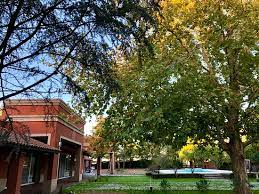
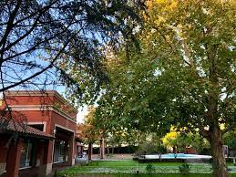

Nosotros
Ubicado en la ciudad de Lincoln, noroeste de la provincia de Buenos Aires. Mestizo propone un ambiente cálido, moderno, en un entorno natural, y con detalles sofisticados. Ideal: escapadas de fin de semana, viaje de negocios, eventos.
El Mestizo Hotel Lincoln dispone de una piscina exterior, una piscina exterior de temporada y aparcamiento gratuito, y se ubica a 5 minutos en coche del Parque Municipal General San Martín. La Plaza Rivadavia está a 2,2 km del Mestizo Hotel. La propiedad se encuentra a unos 25 minutos a pie del centro de la ciudad. Chivilcoy está a 137 km.
Las habitaciones del hotel ofrecen baños privados y un refrigerador mini bar, una sala de estar y TV de pantalla plana con canales vía satélite. Los huéspedes pueden disfrutar de la vista al jardín del hotel. Toallas de baño y artículos de tocador para huéspedes también están incluidos en cada unidad. Hay un desayuno continental disponible todos los días en el hotel.


 
